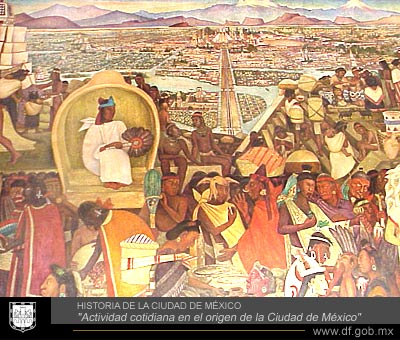

Un poco de la Ciudad de Mexico
Los Aztecas al ser enviados por su Dios Huitzilopochtli en una peregrinación en busca de la señal dada (un águila devorando a una serpiente sobre un nopal), aproximadamente en el año 1000, viajaron procedentes de las siete cuevas de Aztlán desde el norte y hacen su aparición en 1191 en Chapultepec, en 1246 les permiten establecerse en tizapan.
En el año de 1325, los aztecas fundaron México - Tenochtitlan, quizás ni el sacerdote Ténoch, ni el primer emperador Acamapichtli hubieran podido imaginar que este símbolo perduraría por 675 años después como el escudo nacional de una patria con más de 100 millones de habitantes.
México - Tenochtitlan emergió de un puñado de rocas en la inmensidad de sus grandes lagos, a los que el mexica chinampeó metro a metro hasta convertirla en la reina del Anáhuac y posteriormente en la ciudad que albergó el corazón y cerebro del imperio más extenso y poderoso de Mesoamérica. Esta empresa es incomparable en la historia del hombre y evidencia la vocación constructora de los aztecas.

Has click en la imagen para mas informacion